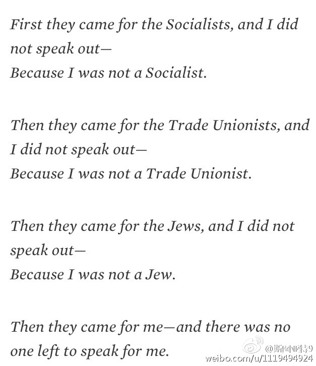

这篇文章认为：这两年中国互联网上的反穆斯林潮流，背后是高层两派的权力斗争：网页链接 一派是以朱维群为首的一派主张淡化民族和宗教，强调世俗化和民族融合；另一派以王正伟为首，主张坚持民族自治区自治政策，保持民族和宗教多样化。两派打得不可开交，习都调解未果。高层的分歧给了一些民族主义者在网上传播种族主义和反宗教言论的空间。
前一段看俄罗斯历史。俄罗斯刚开始工业化时候很像现在的中国（估计其他国家也差不多吧）。很多进城打工的农民工其实生活很艰苦，收入也不多，很多夫妇到休息日才能见面，养孩子更是困难。但解释为什么要这么做，当时有的打工者就说，比起更好的生活，他们更向往的是自由。看到最近网上又铺天盖地的讨论怎么坚持完春节回家（应付父母和亲戚们）的日子。我就又想到：现在的年轻人离开家，去遥远的城市、大城市生活，有多少人其实更多的是逃离家庭和亲戚圈的？
真的开始了。而且禁令包含绿卡拥有者： 网页链接 （这七个国家有绿卡拥有者的在返回美国前要去美国使馆接受额外的审核）@斯图亚特9:我无法理解在美国的中国人竟然会支持特朗普说的禁止穆斯林进入美国的言论。 
 网页链接 一派是以朱维群为首的一派主张淡化民族和宗教，强调世俗化和民族融合；另一派以王正伟为首，主张坚持民族自治区自治政策，保持民族和宗教多样化。两派打得不可开交，习都调解未果。高层的分歧给了一些民族主义者在网上传播种族主义和反宗教言论的空间。
网页链接 一派是以朱维群为首的一派主张淡化民族和宗教，强调世俗化和民族融合；另一派以王正伟为首，主张坚持民族自治区自治政策，保持民族和宗教多样化。两派打得不可开交，习都调解未果。高层的分歧给了一些民族主义者在网上传播种族主义和反宗教言论的空间。